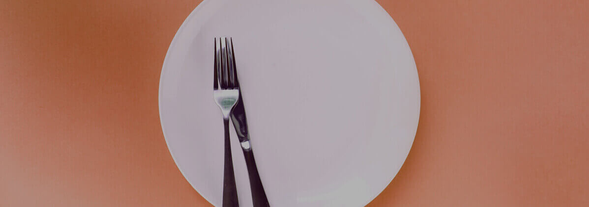
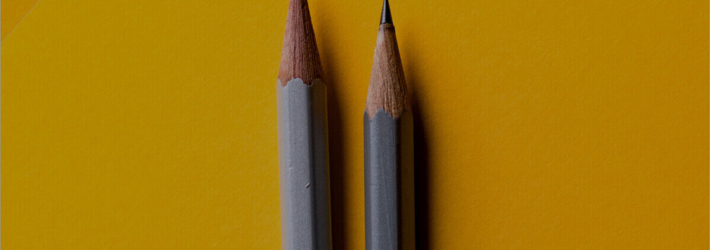
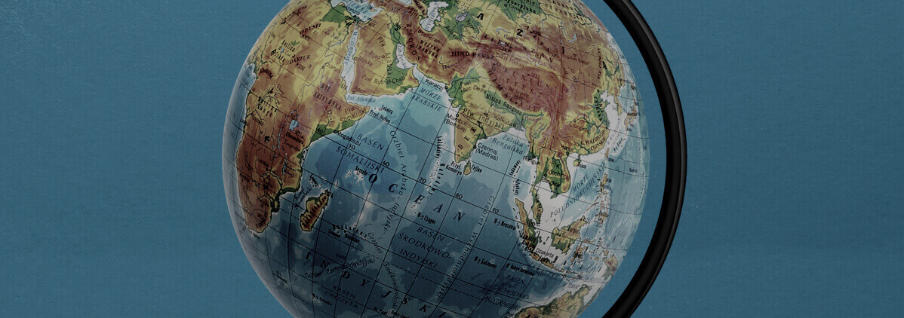
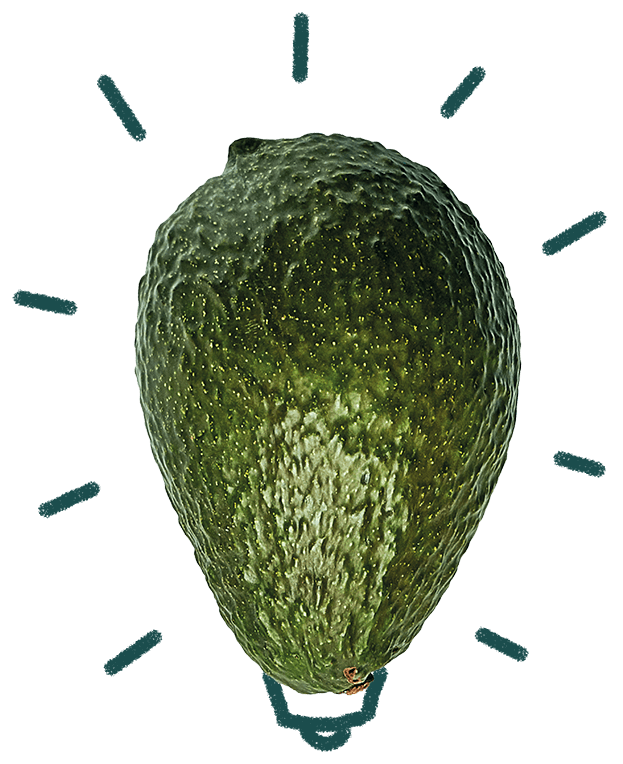

De movement tegen voedselverspilling
1/3e van al het eten wordt verspild

"Het verminderen van voedselverspilling is een van de belangrijkste dingen die we kunnen doen om de opwarming van de aarde tegen te gaan."
- Chad Frischmann, Klimaatveranderingsexpert
Onze ambitie
Onze missie is om iedereen te inspireren en te motiveren om actie te ondernemen tegen voedselverspilling.
Om van onze missie realiteit te maken, moeten woorden in daden worden omgezet. Het is daarom onze ambitie om op elke mogelijke manier bij te dragen aan het bouwen van een wereldwijde movement tegen voedselverspilling.
Alleen door met iedereen samen te strijden tegen voedselverspilling, kunnen we er in slagen om een blijvende positieve verandering teweeg te brengen. Daarom besloten we om onze concrete doelen voor 2020 rond vier pijlers te zetten: huishoudens, bedrijven, educatie en politiek.
Alleen door onze krachten te bundelen en samen te strijden tegen voedselverspilling, slagen we erin om een blijvende positieve verandering teweeg te brengen.
Daarom werken we aan 4 pijlers, met bijbehorende doelstellingen voor 2020.
Huishoudens
50 miljoen mensen inspireren
Bedrijven
Met 75.000 bedrijven samenwerken
Educatie
500 scholen inspireren
Politiek
Impact op het beleid in 5 landen
Alle feiten over voedselverspilling
Al onze kennis, data en informatie hebben we verzameld op één plek: de kennisdatabank. Alles komt van geverifieerde bronnen en je vindt hier als het goed is alles wat je nodig hebt. Mis je toch nog iets? Laat het ons weten!
Kennisdatabank
Alles wat je moet weten, verzameld op één plek

Als je vragen hebt over onze missie en impact, dan horen we graag van je